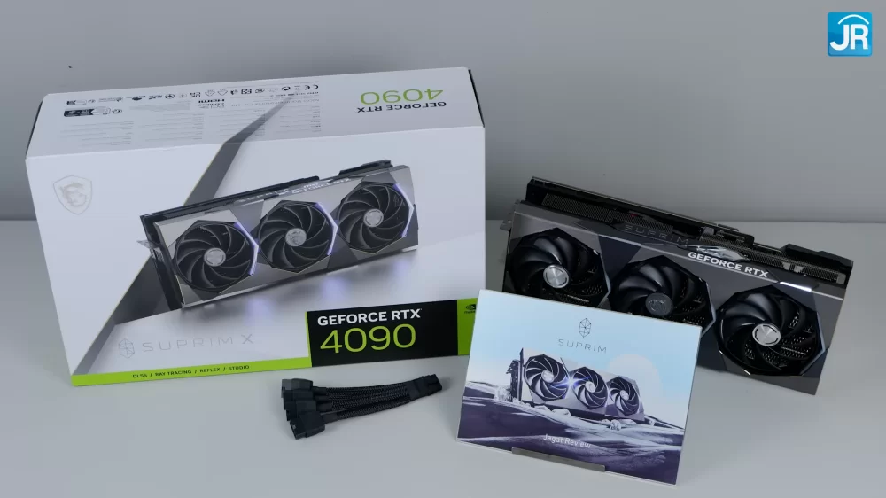
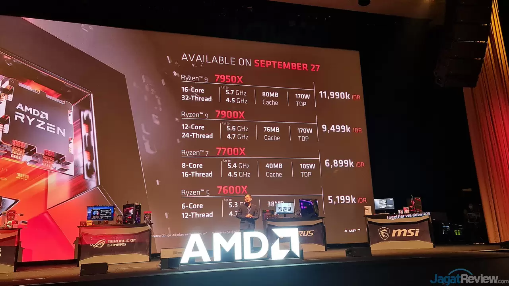
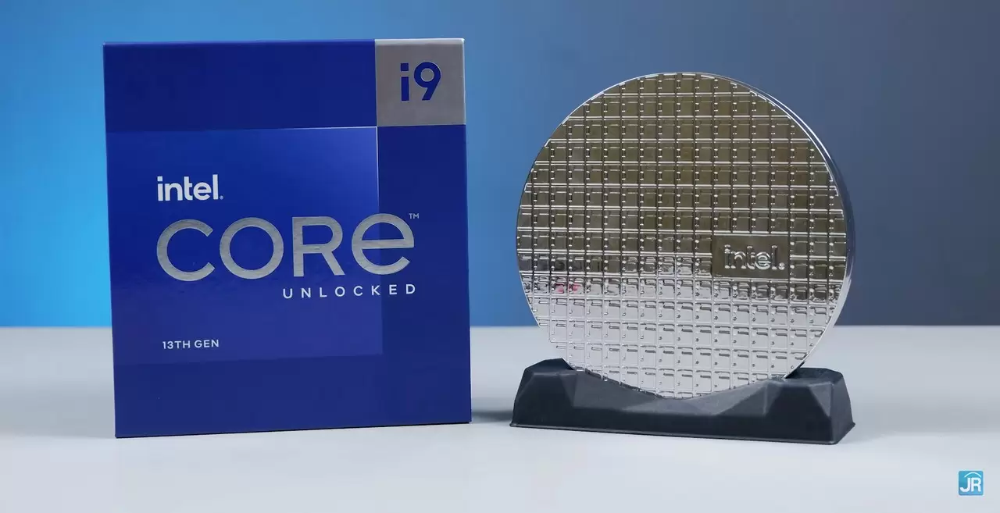
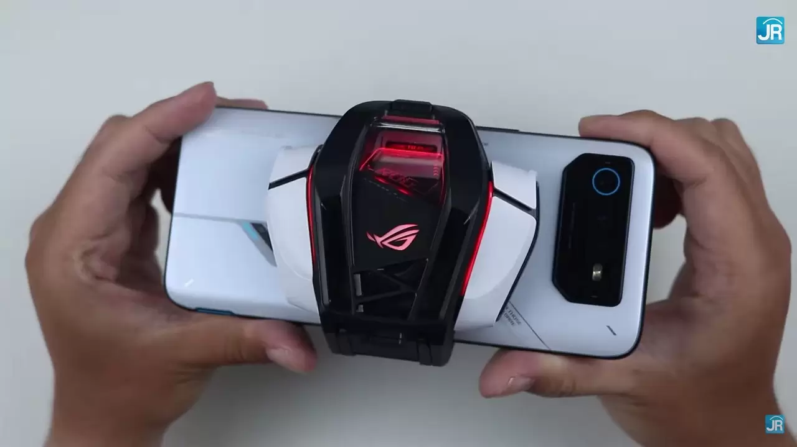

Overclocking & Undervolting MSI GeForce RTX 4090 Suprim X24G
MSI punya beberapa tipe RTX 40 Series, tetapi yang akan kami bahas kali ini adalah yang SUPRIM biasa. Kelengkapannya termasuk converter dan semacam penahan untuk VGA-nya.Perilisan CPU AMD Ryzen 7000 Series di Indonesia
Buat yang memiliki rencana untuk merakit PC Desktop, tampaknya ini saat yang tepat. AMD Indonesia akhirnya meresmikan kehadiran prosesor Ryzen 7000 Series untuk pasar lokal. Tentunya hal ini menandakan pengguna PC di Indonesia sudah mulai bisa membeli prosesor AMD Ryzen 7000 Series dan Motherboard pendukungnya.Intel Setidaknya Siapkan 22 Processor Raptor Lake Gen 13
Intel baru-baru ini mengumumkan generasi prosesor terbaru mereka yakni Raptor Lake Gen-13. Namun belum diungkapkan SKU prosesor apa saja yang akan dirilis, di mana baru prosesor K-Series alias SKU Unlocked yang bakal diluncurkan pada 20 Oktober nanti.Asus ROG 6 & Aeroactive Cooler 6: Seri Smarthphone Gaming Terbaik 2022
Di tahun 2022 ini, hanya ASUS yang tetap konsisten menghadirkan smartphone gaming terbaik mereka ke Indonesia. Krisis chipset sepertinya juga berdampak besar ke pasar smartphone gaming, sampai-sampai beberapa brand ternama lain yang tahun lalu masih berjualan di Indonesia, tahun ini tidak ada suaranya sama sekali.


